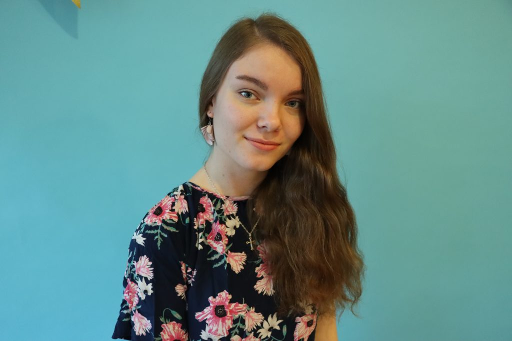

Sanni Alanko
Olen 19-vuotias Toimittajakoulun opiskelija. Valmistuin ylioppilaaksi keväällä 2022. Journalismi kiehtoo, ja Toimittajakoulussa painotan opintoni viestintätieteisiin. Haaveena olisi opistovuoden jälkeen lähteä opiskelemaan journalismia yliopistoon.
Toimittajana minua kiinnostavat erityisesti erilaiset tapahtumat, ihmiset ja elämäntarinat, uskonto ja kristilliset arvot, musiikki, mielenterveys, ja myös kirjallisuus. Vapaa-ajallani harrastan haitarinsoittoa, lenkkeilyä ja nyrkkeilyä, luen kirjoja sekä kirjoitan.
